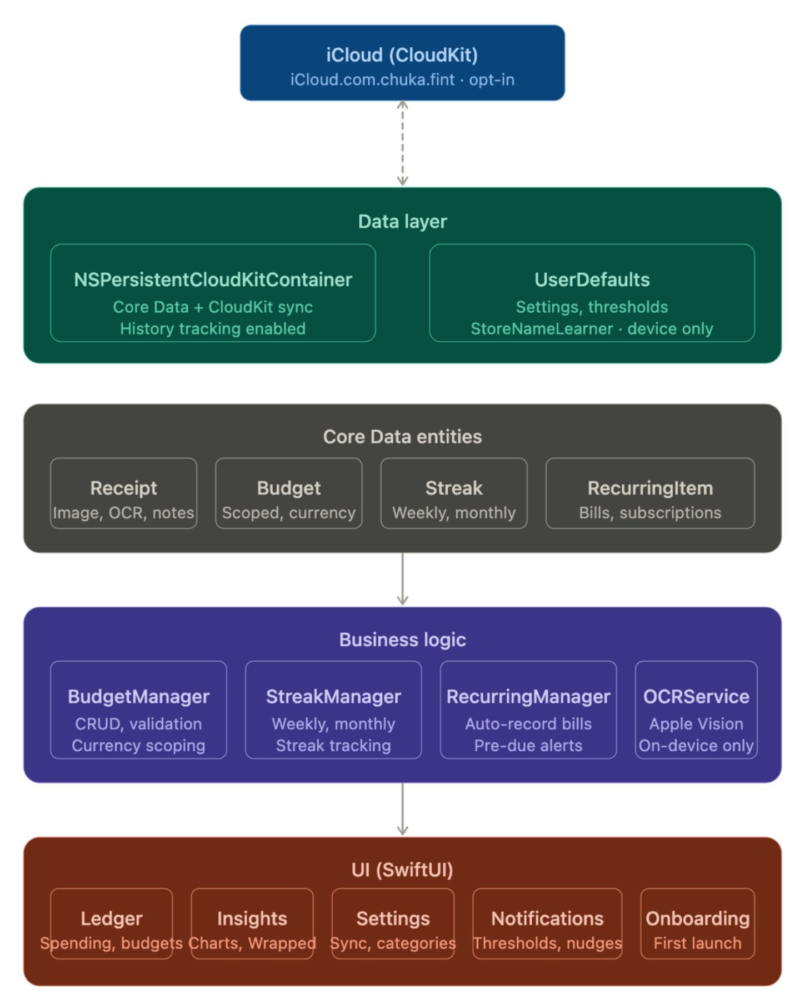

This is my first App Store launch. Fint is a spending tracker and budget manager that lets you scan receipts, add recurring bills, and get detailed visual insights into your spending habits. All without a single server.
You might be wondering how that's possible. The short answer: Apple's ecosystem makes it unnecessary. On-device OCR (Optical Character Recognition), local data storage, CloudKit sync, and push notifications are all first-party tools that handle what most apps outsource to a backend. I just had to put them together.
Fint started as a receipt scanner. I had been reading about Apple Vision, which is their framework for computer vision tasks including OCR, which lets your device read text from images. I built a quick receipt scanner with it and left it sitting on GitHub for a few months.
Then I discovered Core Data. Core Data is Apple's framework for persisting data locally on a user's device. No server, no database you manage, just structured data that lives on the phone and belongs entirely to the person holding it.
That combination got me thinking. Most finance apps ask you to create an account, and you never really know what happens to your data after that. Financial information is about as personal as it gets, and I already had the building blocks for something that never needed to leave your device. So I decided to turn the project into a real app, with privacy as the foundation, not an afterthought.
No account required. Your data lives on your device. I also added optional iCloud sync so your spending history stays accessible across all your Apple devices on the same Apple ID, without any of it touching my servers.
Architecture
Leveraging these tools from Apple, I was able to architect Fint without a backend or servers. The app is organized into three layers, each with a clear responsibility.
- UI Layer: Built with SwiftUI, this is the outermost layer and the only thing users directly interact with. It displays information and receives input, but handles no logic of its own. The app has three tabs: Ledger, where users track spending and manage budgets; Insights, which surfaces visual spending trends using Swift Charts, Apple's native charting framework; and Settings, where users configure their preferences.
- Business Logic Layer: This is where the app's core features live. A dedicated BudgetManager handles budget tracking and validation, while a StreakManager powers the streaks feature. Streaks reward you for staying within your budget consistently across weeks and months. This layer also handles all on-device OCR. I added filtering logic to improve accuracy since receipts contain a lot of noise. The scanner first identifies whether the document is a receipt, invoice, or bank transaction screenshot, then extracts the relevant data accordingly. It is not perfect, but it handles the common cases well and always lets users edit anything it gets wrong.
- Data Layer: This layer is responsible for persistence. Core Data stores all user data locally on the device, structured into entities for receipts, budgets, streaks, and recurring items. I also integrated CloudKit here as the optional sync layer. When a user enables iCloud sync, their data mirrors across all their Apple devices on the same Apple ID, without passing through any server I own or operate.

Challenges
- Limited features: One feature I wanted to include was automated transaction tracking through an external API. It is technically possible, but it would be complex to build and difficult to maintain without a backend. Since my goal was to leverage Apple's ecosystem as much as possible, I left it out of V1. The plan for a future version is to use Siri and Apple Intelligence so users can log spending without even opening the app.
- iCloud sync: This took three days to figure out. Sync was working perfectly in development but completely silent in production. I eventually found a developer on the Apple forums with the same issue. The fix was simple but easy to miss: CloudKit.framework was not manually linked in the project. Xcode includes it implicitly in debug builds but drops it in production. Adding it manually under Build Phases in Xcode resolved it.
-
Notification deep linking: Notifications were trickier than expected. Tapping a notification would always land users on the default tab instead of the relevant page. The fix was adding a dedicated file to the business logic layer called
AppNavigationState, a shared singleton that holds the app's navigation state. When a notification fires, it updates that state and the UI responds by routing the user to the correct page automatically.
Tradeoffs and What's Next
The honest tradeoff is that some features that would meaningfully improve the user experience will eventually require a backend. That is just the reality of building local-first. But it does not mean the experience has to suffer. Apple's ecosystem is deep, and I plan to keep reading through their frameworks. If something is a good fit for Fint, I will incorporate it.
The next steps are Apple Intelligence and Siri integration so users can log spending without opening the app, and potentially an Apple Watch app for quick spending glances throughout the day.
Finance apps carry real responsibility. Any mistake involving someone's money or data about it can have serious consequences. Fint's zero-backend architecture sidesteps a whole category of those risks. There is no server to breach, no database to leak. The app only ever works with data the user puts in themselves, and that data never leaves their device unless they choose to enable iCloud sync.